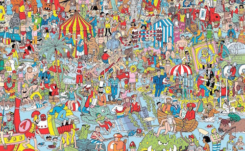

Where's Waldo?

Goal:
Make a program where the user has to find Waldo!
Steps:
- Find the Where's Waldo recipe program in Eclipse.
- Find a Where's Waldo picture and add it to the /images folder.
- Follow the instructions in the code to play a sound when the user finds Waldo!
- Make sure you SAVE YOUR CODE when you are done.